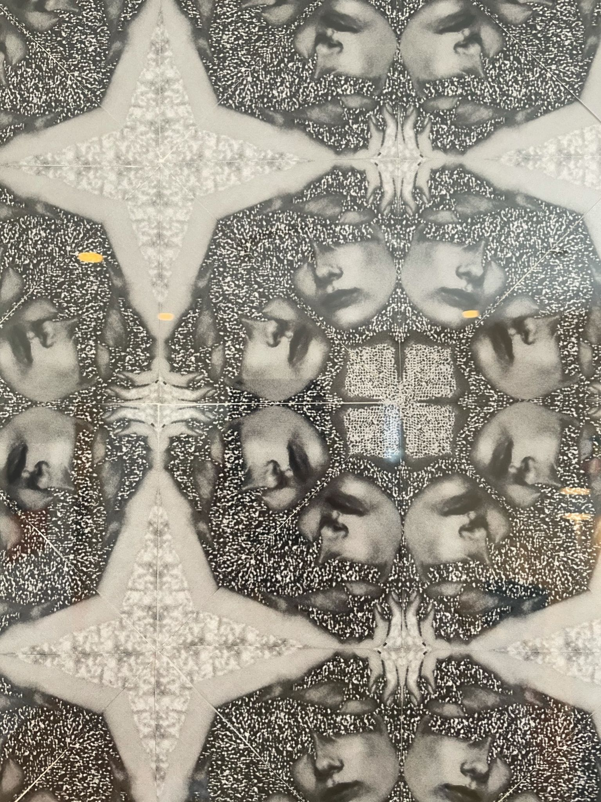
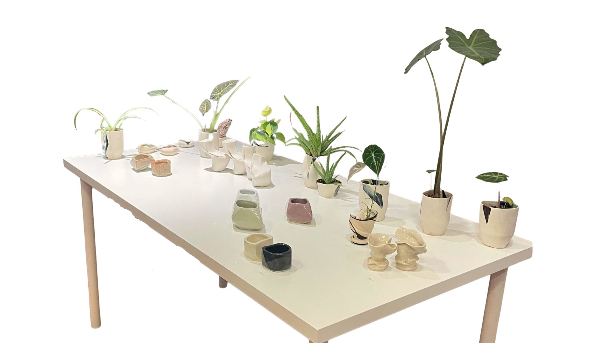
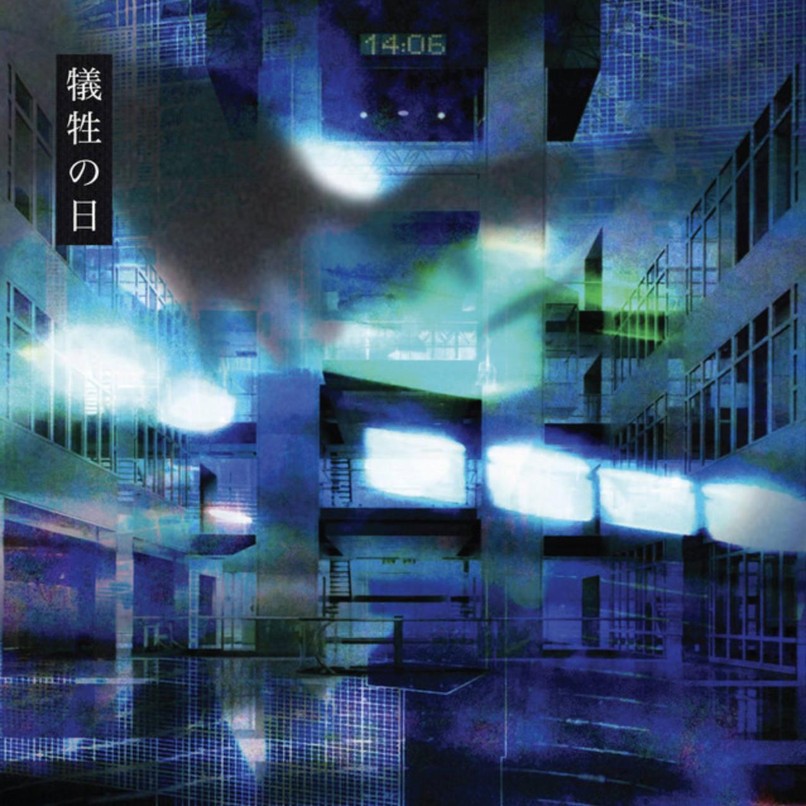
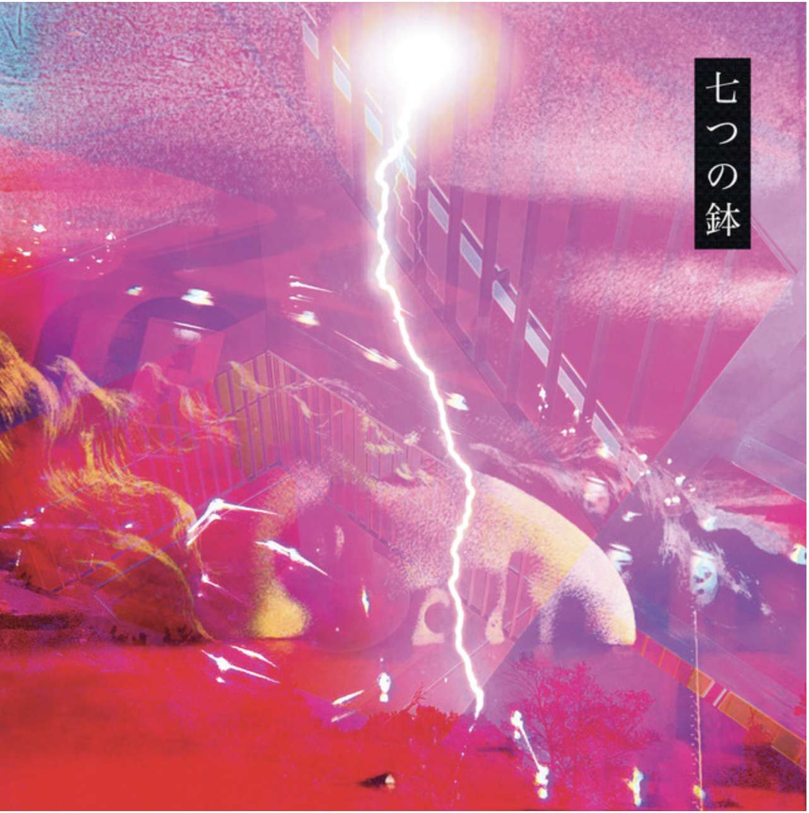

Private Commission
Commission work begins with a conversation: a collaboration between the client's vision and the artist's discipline.
PORTFOLIO INDEX
Real content, images, and embedded media from Jade Gouvernel's Google Sites portfolio, rebuilt inside the refined visual language of the current website.
BLUE SERIES
Blue began as an attempt to map something that refuses to be mapped. Grief does not move in stages - it moves in circles, in reversals, in silences that arrive without warning.
These paintings are not illustrations of loss. They are its architecture. Two tones. Stark form. No room for decoration, because decoration would be a lie.
DREAM SERIES
These works live in the minutes before waking - where the subconscious has not yet been corrected by consciousness, where images surface whole and strange and insist on their own logic.
The Dream Series is not about sleep. It is about the self that exists before the performance begins.
COLLAGE
Collage acknowledges that images already exist, that the world is already saturated with representation, and that making something new does not always mean starting from nothing.
Sometimes it means looking at what is already there, understanding what it is doing to you, and taking it apart.
Watch Evolution .1SUN
The body carries what the face has learned to conceal - history, desire, violence, tenderness, time. Sun is about exposure in every sense of the word.
These photographs ask whether being seen fully, not flatteringly and not safely, can also be beautiful.
PORTRAITS
A portrait is never simply a record of a face. It is a negotiation between the person looking and the person being looked at, between likeness and truth.
Jade's portraits are made in ink - bold, flat, irreversible - because ink does not allow second-guessing.
NUDE SERIES
The nude is one of art's oldest subjects and one of its most contested. Jade approaches it from the other side of that history, as a site where power, desire, authorship, and the politics of the body are negotiated.
MULTIDISCIPLINARY PRACTICE

Commission work begins with a conversation: a collaboration between the client's vision and the artist's discipline.

Clay resists control, remembers pressure, and insists on honesty through material response.

Film and acting extend Jade's investigation of the body as a constructed and revealed image.
Watch HUMAN EXISTENCEWriting sits beside the visual work as another form of image-making, ritual, and interior construction.

Singing is the oldest thing Jade does: the art form where instrument and person become indistinguishable.

Tattooing is treated as an intimate commission, rooted in symmetry, reduction, black-and-white form, and symbolic weight.

Cover art translates sound into a single image that can hold mood, world, and identity at once.